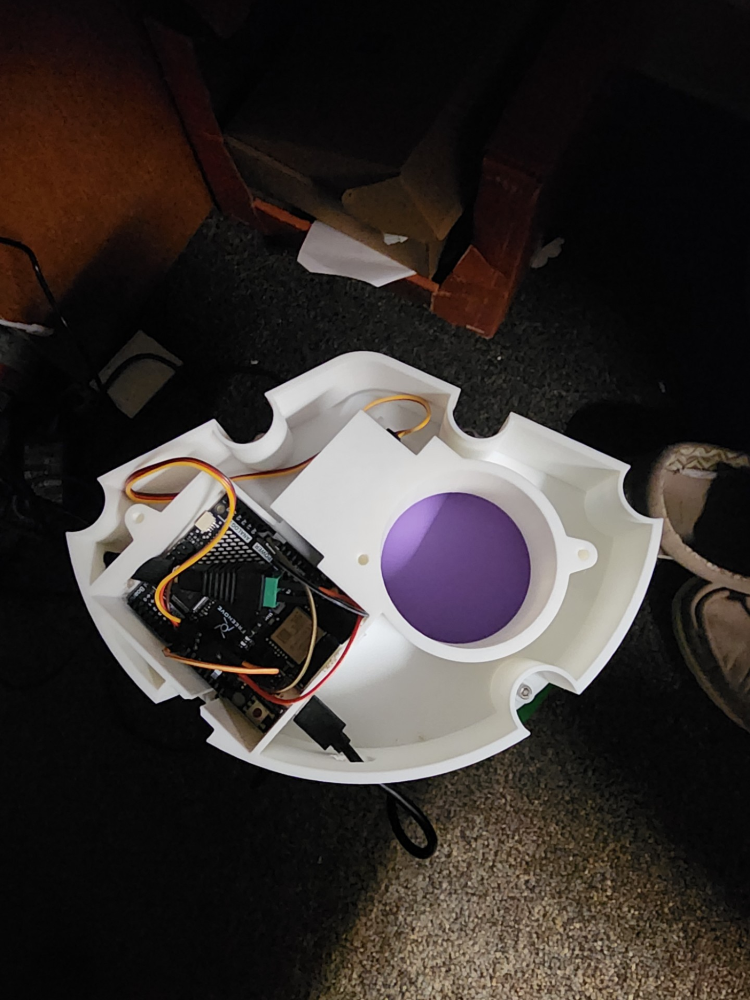
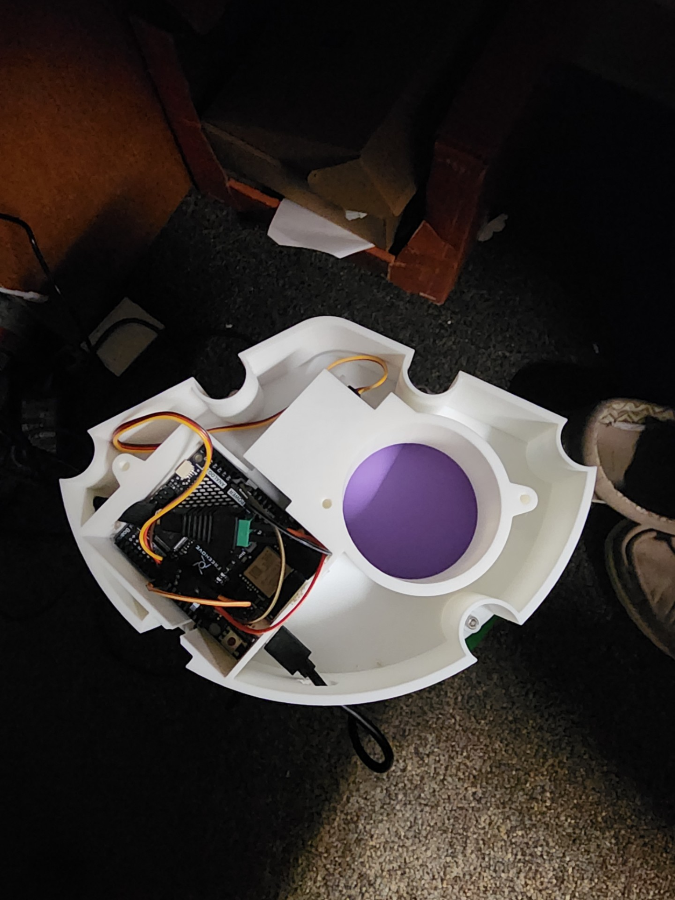

Automatic Cat Feeder
 

Overview
This project tackles the challenge of feeding household cats while preventing raccoons and other pests from raiding the food. The design accommodates up to 100 lbs of kibble by stacking bulk storage buckets above a custom 3D‑printed housing. A servo‑actuated gate dispenses measured portions into a tray, and the funnel and outlet geometry control the flow to deliver consistent servings.
Role
I developed every component in Fusion 360, selected the electronics using an Arduino R4 Uno WiFi and MG996R servo, and programmed the timing logic to dispense food automatically or on command via Amazon Alexa. To handle the weight of tens of pounds of feed, I designed structural features like ball‑bearing guides and heat‑inserted threaded inserts that allow the gate to move smoothly under load and enable the entire feeder to be disassembled and reassembled.
Tools Used
Fusion 360 for 3D modelling; Arduino R4 Uno WiFi microcontroller with servo control; MG996R servo; ball bearings and heat inserts for modular assembly; and IoT integration via Arduino Cloud for remote operation.
Outcome / Impact
The feeder reliably delivers scheduled portions while keeping pests out of the stored food. By optimising the funnel angle and feed tube to reduce forces on the gate and integrating smooth ball‑bearing guides, the design allows a small servo to handle significant static loads. This project deepened my experience in mechanical design, embedded electronics and additive manufacturing, and sets the stage for future enhancements such as a more stable base or additional sensors.